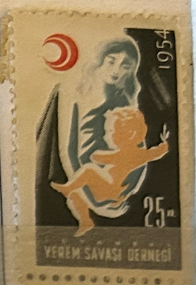
| SOURCE | TITLE| IMAGE MATCH | click to source page |
| Osta | Türgi " PUNANE POOLKUU " 1948/49 MNH (247182359) - Osta.ee | 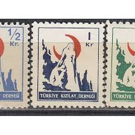 |
| eBay | Turkey Medical Stamps for sale | eBay | 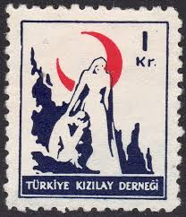 |
| bwdavis.us | Worldwide Fundraising, Charity - Collectibles of Bwdavis | 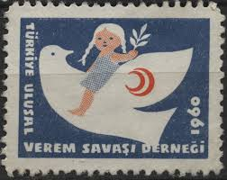 |
| eBay | Turkey - 1948 -1949 Red Crescent - Inscription TÜRKIYE KIZILAY DERNEĞI | eBay | 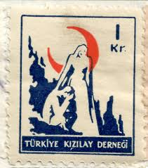 |
| Alamy | TURKEY - CIRCA 1948: stamp printed by Turkey, shows Mustafa Ismet Inonu, President, circa 1948 Stock Photo - Alamy | 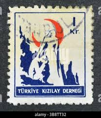 |
| Stamp Community Forum | Turkey Postal Tax Ra Stamp...children Kissing - No Date Ra170 Series - Stamp Community Forum | 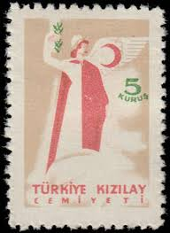 |
| Shutterstock | 8+ Thousand Post Stamp Turkey Royalty-Free Images, Stock Photos & Pictures | Shutterstock | 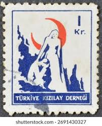 |
| Todocolección | turquia, 1 curus, luna roja,, año 1955, usado. - Buy Antique stamps of Turkey on todocoleccion | 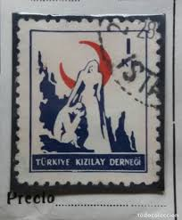 |
| Dreamstime.com | Nurse Help Old Woman, Polish Red Cross, Circa 1977, Editorial Image - Image of disabilities, disabled: 66222375 | 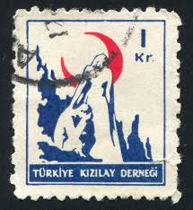 |
| Osta.ee | Türgi " PUNANE POOLKUU " 1948/49 MNH (226705622) - Osta.ee | 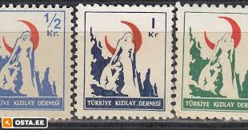 |
| Stamps for sale from around the world | 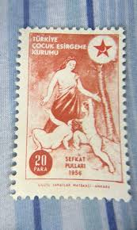 | |
| BalkanPhila | 1950 Turkey Red Crescent Used set of 11 – BalkanPhila | 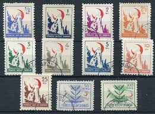 |
| HipStamp | Turkey 1945 Obligatory Tax 1k (Nurse Holding Baby) unmoun... | Europe - Turkey, Stamp / HipStamp | 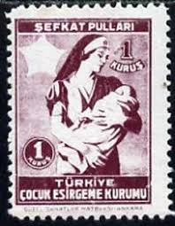 |
| Stampedia | TURKEY 1956 20 para Postal tax stamp Stamps, | Woman and Children | 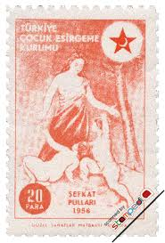 |
| Stamp Community Forum | Children On Stamps - Page 15 - Stamp Community Forum | 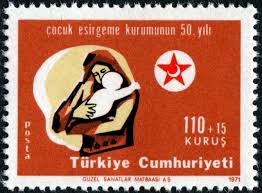 |
| Shutterstock | 2+ Thousand Ancient Nurse Royalty-Free Images, Stock Photos & Pictures | Shutterstock | 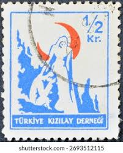 |
| eBay UK | Cats Turkish Stamps for sale | eBay UK | 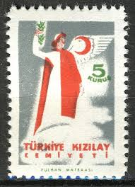 |
| eBay | TURKEY @ BoB 1956 Good Error Mi.201 MNH - Nice Priced @ Tu.13 | eBay | 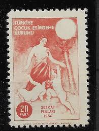 |
| lastdodo.com | Turk tarih kurumu basimevi [Ankara] Stamp catalogue - LastDodo | 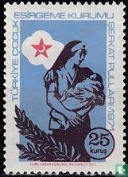 |
| eBay | Turkey Ethnicity Family stamp 1951 | eBay | 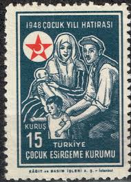 |
| Stampedia | stampedia TURKEY STAMP catalog | 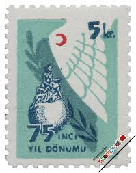 |
| eBay | Turkey Souvenir Sheet Stamps for sale | eBay | 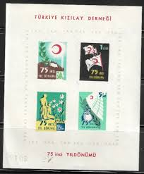 |
| eBay UK | Historical Events Turkish Stamps for sale | eBay UK | 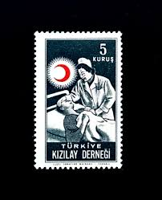 |
| eBay | Red Back of Book Turkey Stamps for sale | eBay | 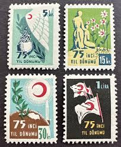 |
| Shutterstock | Turkey- Circa 1956 Stamp Printed By Stock Photo 98065256 | Shutterstock | 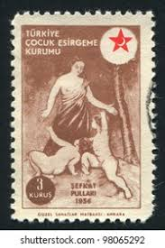 |
| Pingudu Müzayede | Online Live Auction / World Stamps, Postal History and Philately / 25 April, Sunday - 4:05 PM (Gmt +3) | Pingudu Müzayede | 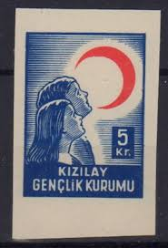 |
| eBay | Mint Never Hinged/MNH Red Turkish Stamps for sale | eBay | 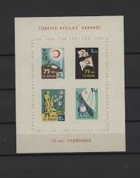 |
| eBay | 1949-52 TURKEY POSTAGE TAX STAMPS - NEW & USED - VF - COURTESY LISTING (E#2509) | eBay | 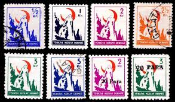 |
| DAMGASIZ GOMSUZ BLOK PUL ALDIM : 15 TL | 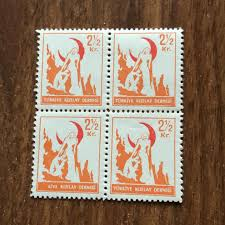 | |
| eBay | Turkey Art Painting Nudes stamp 1956 MLH A-1 | eBay | 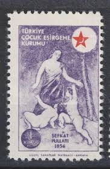 |
| Shutterstock | Vintage Stamp Slogan: Over 472 Royalty-Free Licensable Stock Photos | Shutterstock | 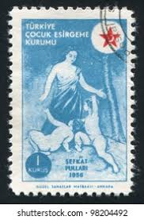 |
| BalkanPhila | 1890 Turkey Iraq Baghdad Bisect on Piece – BalkanPhila | 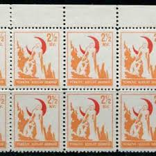 |
| Shutterstock | 4+ Thousand Turkey Society Royalty-Free Images, Stock Photos & Pictures | Shutterstock | 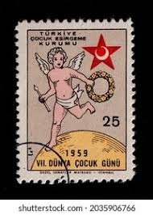 |
| eBay | TURKEY Stamp Set - 1953 Red Crescent Society and Type B Overprint Mint OG r33 | eBay | 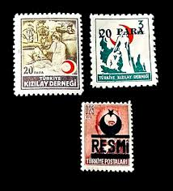 |
| Todocolección | segell pro-refugiats. comité central d'ajut als - Buy New cinderella stamps of the Spanish Civil War on todocoleccion | 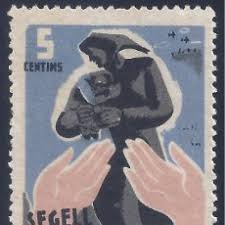 |
| Stamp Community Forum | Turkey Postal Tax Ra Stamp...children Kissing - No Date Ra170 Series - Stamp Community Forum |  |
| Cyprus Stamps | North Cyprus Stamps SG 0873-74 2022 EUROPA Stories and Myths - CTO USED | 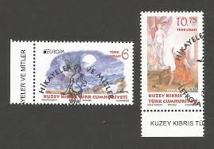 |
| Shutterstock | Ankara Türkiye 03082022 Republic Turkey Postage Stock Photo 2133363899 | Shutterstock | 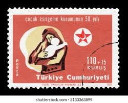 |
| eBay UK | Turkey Stamps Block for sale | eBay UK | 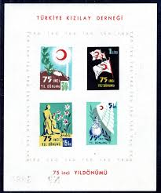 |
| commonwealthstamps.com | Commonwealth Stamps Cyprus 1969 Ancient Maps Set Fine Mint | 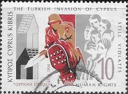 |
| eBay | 1910's-1955 TURKEY M&U STAMPS LOT ON ALBUM PAGE CRESCENT MOON OVERPRINTS & MORE | eBay | 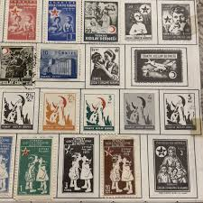 |
| Alamy | TURKEY- CIRCA 1954: stamp printed by Turkey, shows nurse with children, circa 1954 Stock Photo - Alamy | 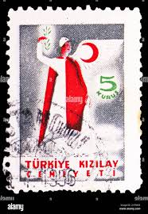 |
| Tumblr | vintage postage stamps — Hong Kong postage stamp: Dragon Boats c. 1975 ... | 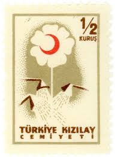 |
| Müzayede APP | Eylül Mezat | kılıç | Müzayede APP | 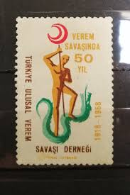 |
| eBay | TURKEY , 1948/50 , POSTAL TAX STAMPS , MIXED LOT OF 3 STAMPS , 1 O.P., MNH | eBay | 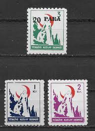 |
| TouchStamps | Stamp: Child aid (Turkey 1966) - TouchStamps | 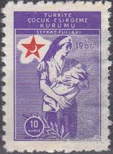 |
| eBay | Uncertified Fiscal, Revenue Turkey Stamps for sale | eBay | 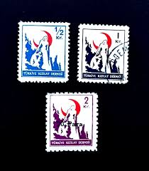 |
| Stampedia | stampedia TURKEY STAMP catalog | 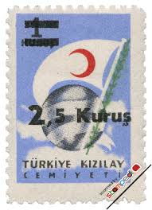 |
| Pngtree | 98+ شعار الأمان الصور والصور وصور الخلفية للتنزيل المجاني | 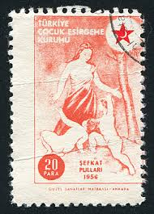 |
| Müzayede APP | Dorlion Müzayede | Kızılay | Müzayede APP | 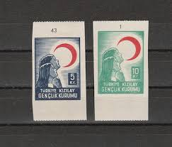 |
| İsfila | İsfila | |
| HipStamp | Search "Turkey 1957" in Topicals / HipStamp | |
| Dreamstime.com | 361 Mail Slogan Stock Photos - Free & Royalty-Free Stock Photos from Dreamstime | |
| Benim Koleksiyonum | 1958 Turkey Red Crescent Society Compassion Stamps Quartet K143 Block 1/2 Kurus Stamp | |
| eBay | Turkey 1954 Red Crescent essays ? 2v ex Jim Czyl | eBay | |
| Stampedia | stampedia TURKEY STAMP catalog | |
| eBay | Turkey - 1972 Charity Stamp - Never Hinged | eBay | |
| eBay | 1940 Turkey Charity POSTAL TAX SOLDIER SC#RA41 USED VF NURSE and CHILD | eBay | |
| Dreamstime.com | 1,314 Isolated Turkish Stamp Stock Photos - Free & Royalty-Free Stock Photos from Dreamstime | |
| Stampedia | stampedia TURKEY STAMP catalog |